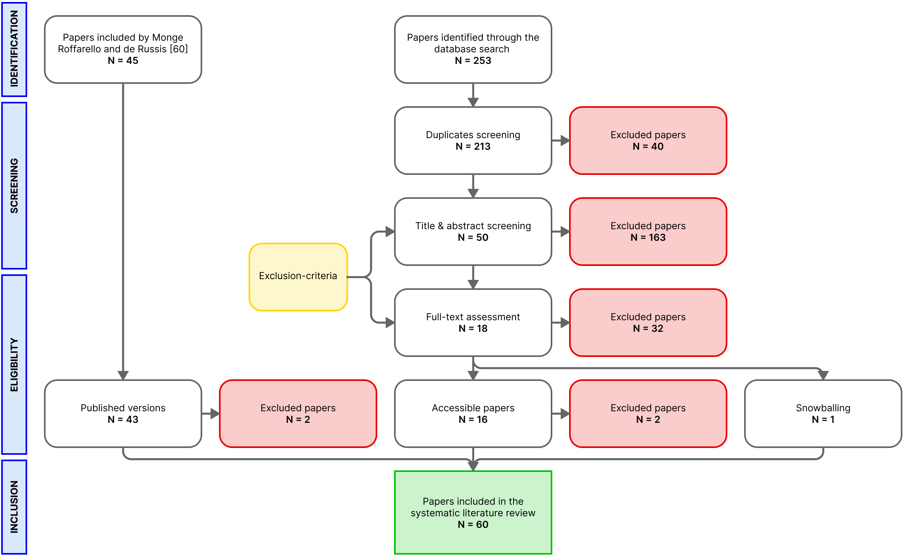
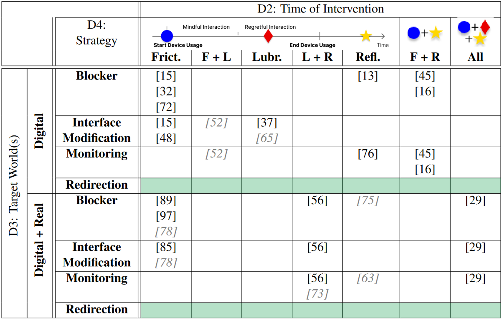

FocusPocus
Key Information
Outcome
Android App
Roles
Researcher, Designer, Developer
Duration
April 2023 - Dec 2023 (8 months)
Challenge
Smartphones have become our ubiquitous daily companion. They support us in everyday tasks, enabling us to handle them more efficiently, and they can act as a “micro escape” from negative feelings or uncomfortable situations. However, as smartphones give us easy access to engaging content, for example on social media applications, they also challenge our self-regulation and can even become an addiction. App developers are often more motivated to encourage user engagement than to provide a meaningful interaction. They keep the user in the loop with Attention Capture Damaging Patterns (ACDPs) like infinite scrolling and never-ending autoplay which draw the attention away from the user’s initial goal towards the content of the app. As a result, the user falls into a habitual passive consumption and loses control over their smartphone usage. After the usage ends, affected users often feel a sense of regret as the interaction lacked meaning or interfered with the activities they initially had planned. To combat this problem, researchers emphasize the need to improve the users’ digital well-being which is the impact of digital technologies on a person’s well-being. Digital Self-Control Tools (DSCTs) help the user to regulate their smartphone usage and reduce the time they spend on their devices. While there are numerous commercial DSCTs, most of them are not scientifically based despite the growing research in this domain. Furthermore, approaches often focus on reducing the time the user spends on the device or in certain apps. In general, overuse may be one aspect of problematic smartphone usage. However, the real challenge is to enable the user to avoid the kind of usage, they perceive as regretful, and encourage meaningful interaction instead.
Solution
One approach to encouraging meaningful interaction is to redirect the user’s attention from the regretful smartphone usage towards a different activity. In a related survey, researchers discovered activities that users would have preferred to do instead of using their smartphone. With their outcome as a basis, I developed FocusPocus, a novel DSCT that explores alternative activity suggestion as a means for the user to regain their sense of agency. I examined the usability of the tool and prepared for a large-scale field study in an exploratory pilot study. In the study, participants used FocusPocus in their daily life for one week and answered questions about their smartphone usage and well-being in two questionnaires. The results of the study suggest that alternative activity suggestions have the potential to improve users’ digital well-being and help them use their smartphone more meaningfully.
Process
Discovery
To get a current overview of scientific approaches to Digital Self-Control Tools, I conducted a systematic literature review following the PRISMA guidelines in which I addressed the following research questions: Q1 Which approaches to digital self-control are researchers proposing and which intervention types do they contain? At which time do the proposed digital self-control tools intervene? Which goal do they pursue and which world do they target, only the digital or also the real one? Q2 Which type of digital self-control tools is underrepresented in current research? As a base, I used an existing review which reviewed papers published until June 2021 and I extended it with more recent papers from the electronic database of the Association for Computer Machinery (ACM) Guide to the Computing Literature. This procedural flowchart shows the selection process.
In the end, I extracted a general corpus of 60 papers describing 53 distinct DSCTs. I then created a data extraction sheet to systematically code the papers and ultimately generate a multi-dimensional design space of the exisiting tools. I ordered the tools according to their desired effect (dimension 1: reduce usage time, track habits, regain sense of agency), the time they intervene at (dimension 2: before, during, after the potentially regretful usage or at multiple times), the world they target with their intervention (dimension 3: digital world, digital and real world) and the way the intervene (dimension 4: blocker, interface modification, monitoring, redirection). This helped me visualize the state of current research and its gaps. This way, I found an opportunity for exploring a new tool as I did not find any approach which utilized redirection as a means for the user to regain their sense of agency over their smartphone usage. Below you can see the design space for the desired effect of regaining a sense of agency in which I visualized the gaps in current research.
Development
To be continued ...